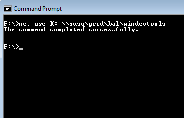
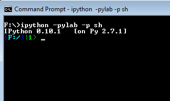

Show users how to target a specific windows python toolchain. We’ll be using windows since everyone either has a windows 32 or 64 bit system on hand.
Open command prompt
Map K: to \\susq\prod\bal\windevtools:
> net use K: \\susq\prod\bal\windevtools
If you don’t already have K: mapped then when you are finished it should look something like this:
If you get this error:
"The local device name is already in use"
You’ll need to delete the mapping to K first and then try mapping it again:
> net use K: /delete
Depending upon your system copy the 32bit or 64bit .bat file to your current working directory. This bat file will setup the environment variables that will point the python distro prebuilt for your system:
> copy H:\transfer\pyclass\win32pysetup.bat .
or
> copy H:\transfer\pyclass\win64pysetup.bat .
Run the .bat file:
> win32pysetup.bat [Enter]
or
> win64pysetup.bat [Enter]
Start ipython.
> ipython -pylab -p sh
You should see this at the ipython prompt
Import these modules:
import numpy as np
import scipy as sp
import tables as tbl
import sqlite3
import datetime
import urllib
import time
import glob
import matplotlib.pyplot as plt
import struct
import glob
Plot some data:
plot(np.array([1,2,3,4]))
If you started ipython with the -pylab flag then the plot function should be in your global namespace.
If you started ipython without -pylab then after you import pyplot:
>> import matplotlib.pypolt as plt
then you can use pyplot to plot the graph too:
>> plt.plot(np.array([1,2,3,4]))
>> plot.show()
If Steps 6 and 7 run fine then you’re setup for the class. If not please email me and we’ll try to work it out 1-on-1.
Some people have been getting this error:
global MatplotlibShell = <class 'IPython.Shell.MatplotlibShell'>
1107 _load_pylab(self.IP.user_ns)
1108
1109 class IPShellMatplotlibGTK(IPShellGTK):
1110 """Subclass IPShellGTK with MatplotlibMTShell as the internal shell.
1111
1112 Multi-threaded class, meant for the GTK* backends."""
1113
1114 def __init__(self,argv=None,user_ns=None,user_global_ns=None,debug=1
):
1115 IPShellGTK.__init__(self,argv,user_ns,user_global_ns,debug,
1116 shell_class=MatplotlibMTShell)
1117 _load_pylab(self.IP.user_ns)
1118
1119 class IPShellMatplotlibWX(IPShellWX):
1120 """Subclass IPShellWX with MatplotlibMTShell as the internal shell.
1121
K:\Toolchains\Windows7\X64\sig1\Python-2.7.1\lib\site-packages\IPython\Shell.py
in __init__(self=<IPython.Shell.IPShellMatplotlib instance>, argv=None, user_ns=
None, user_global_ns=None, debug=1, shell_class=<class 'IPython.Shell.Matplotlib
Shell'>)
58 # Default timeout for waiting for multithreaded shells (in seconds)
59 GUI_TIMEOUT = 10
60
61 #-----------------------------------------------------------------------
------
Some issue with multithreads and matplotlib. Try these steps to avoid it.
start ipython without the flags “ipython” instead of “ipython -pylab -p sh”:
> ipython
Then in ipython run this:
import numpy as np
import matplotlib.pyplot as plt
plt.plot(np.array([1,2,3,4]))
plt.show()
{kind=link}
{kind=link}
{kind=link}
{kind=link}
{kind=link}
{kind=link}
{kind=link}